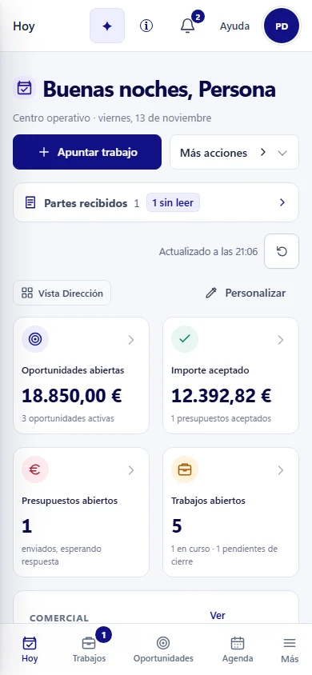

Clientes y oportunidades
Consultar clientes, ubicaciones e historial. Seguir las oportunidades desde la información comercial hasta el trabajo.
Producto propio · Creado desde cero
El día a día de una instaladora, en una sola herramienta.
Creé Voltian OS para que autónomos y empresas de instalación y mantenimiento puedan coordinar clientes, presupuestos, visitas y trabajos desde el mismo sitio, en oficina y en campo.

La ficha del cliente da contexto a las oportunidades y los presupuestos. Cuando llega el momento de ejecutar, el equipo planifica las visitas, registra el trabajo realizado y conserva el parte.
Consultar clientes, ubicaciones e historial. Seguir las oportunidades desde la información comercial hasta el trabajo.
Preparar presupuestos por partidas, consultar documentos de compra y venta y compartir documentación con gestoría según los permisos.
Programar visitas, asignarlas al equipo y consultar el calendario. Desde Mi día, el personal de campo consulta su jornada y accede a sus intervenciones.
Registrar lo realizado, añadir fotos y materiales, recoger la conformidad y revisar el parte antes del cierre.
Situar equipos sobre planos y mapas, consultar sus fichas y organizar revisiones periódicas.
Reunir los partes de campo y ver desde oficina qué está pendiente de revisión.



Capturas de Voltian OS con datos ficticios. Algunas funciones dependen del plan y la configuración.
En la demo puedes recorrer Inicio, Trabajos, Clientes y Presupuestos. Prueba a buscar un cliente, consultar un presupuesto o abrir un parte y simular su cierre.
En esta revisión, el marco y el fondo pasaron a identificar el estado del parte. En móvil, albarán y firma quedaron juntos y visibles. Las imágenes muestran la misma intervención en las dos versiones.


Construí la app con React y TypeScript, una API en Fastify y PostgreSQL. Los ejemplos reproducen partes concretas de la interfaz y de la planificación en un entorno independiente.